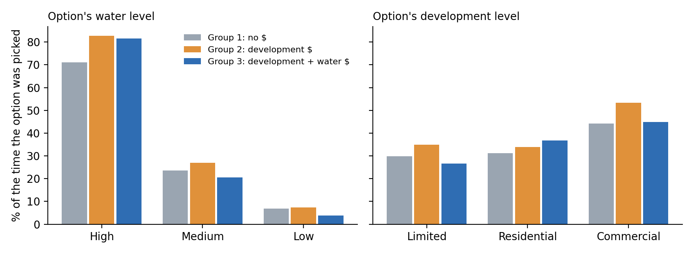
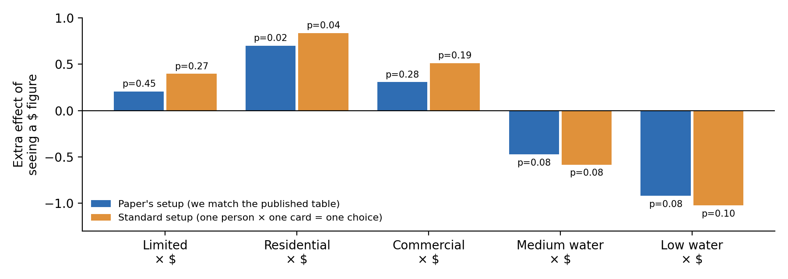

The whole thing in five sentences. Governments increasingly attach dollar values to nature, and critics worry that decision-makers will then focus on whatever has a dollar sign next to it. The authors tested this by giving 164 New Zealand councillors and council staff a survey where they chose between made-up housing developments. Everyone saw the same options, but randomly chosen groups saw dollar figures for some effects and not others. People who saw a dollar figure for something gave it more weight in their choices. We rebuilt the authors' analysis from their raw data: we match their main table almost exactly, but only by copying an unusual modelling choice. Done the standard way, the effects point the same direction but are less certain.
Imagine you're on a town council deciding whether to approve a new housing development. A report tells you the development brings in $3 million in revenue. It also says the development will make the local stream murky, and that a historic building will be hemmed in by new houses. Only the first effect has a number attached.
Will the dollar figure win out simply because it is a number? That's the worry: that decisions based on "mixed" information (some effects in dollars, some only described in words) tilt toward the effects that have been priced. The paper asks whether that tilt is real among actual decision-makers.
An online survey of New Zealand regional and district councillors and council staff, run in late 2015. 180 people started it; 164 answered every question used in the analysis, and 123 of those were councillors.
Picture a town of 20,000 people growing 4% a year. On each choice card, pick one of three options: Option A, Option B, or keep things as they are (the status quo). Every option is described by three features (economists call them attributes):
| Attribute | Possible levels | Status quo |
|---|---|---|
| Development | Limited (half the growth is housed) · Residential (all of it) · Commercial (all of it, plus shops) | None |
| Water quality in the stream | High (swimmable) · Medium (murky) · Low (unsafe) | High |
| Cultural heritage (a historic tavern called "The Stables") | Stables (surrounded by buildings) · Stables & landscape (the view is affected too) | No impact |
The survey had 12 different cards in total, and each person answered 4 of them.
| Group | Extra information shown | People |
|---|---|---|
| 1 | None: words only | 57 |
| 2 | Development revenue in dollars ($1M / $2M / $3M) | 52 |
| 3 | Development revenue and the dollar loss from worse water ($250k medium / $500k low) | 55 |
The cultural impact never got a dollar figure. Because people were put into groups at random, the groups should be alike in every other way. Any difference in how the groups choose can therefore be blamed on the information they saw. That's what makes this an experiment rather than just a survey.

How often an option was picked when it appeared on a card, by group. Made from the data by step2_look_at_raw_choices.py.
Group 3, the only group that saw the dollar cost of dirty water, picked low-water options least often (3.8% vs. about 7%). Group 2, which saw development revenue, picked the status quo least often (20% of cards vs. 31% in Group 1). These are hints, though, not proof. Each option bundles several features at once, so we need a model to separate them.
Economists model choices like this: a person gives each option a score (formally, its utility) by adding up points for its features. Options with higher scores are more likely to be picked, but not guaranteed to be. People are a little unpredictable.
Score of an option = (points for its development level) + (points for its water level) + (points for its cultural impact) + (extra points if this person's group saw a dollar figure for that feature)
Chance of picking an option = eits score ÷ (escore A + escore B + escore status quo)
The status quo has none of the features, so its score is always 0. Every "points" number is therefore measured relative to leaving things as they are. Those points are the coefficients in the paper's Table 3. The model's job is to find the coefficients that make the choices people actually made as likely as possible. This is called maximum likelihood.
There are 12 coefficients:
There is no "Cultural × $" coefficient because culture was never priced.
Using our standard-setup estimates (rounded): Residential +2.34, Limited +2.24, Low water −3.82, Stables & landscape −1.00, Residential × $ +0.84, Limited × $ +0.40, Low water × $ −1.02.
| Option | Features | Score, Group 1 (no $) | Score, Group 3 (all $) |
|---|---|---|---|
| A | Residential, Low water, no cultural impact | 2.34 − 3.82 = −1.48 | −1.48 + 0.84 − 1.02 = −1.66 |
| B | Limited, High water, Stables & landscape | 2.24 − 1.00 = 1.24 | 1.24 + 0.40 = 1.64 |
| Status quo | Nothing changes | 0 | 0 |
| Predicted chance of picking A / B / status quo | 4.9% / 73.8% / 21.3% | 3.0% / 81.2% / 15.8% | |
Seeing the dollar figures pushes people toward B, the option that develops without hurting the water.
This is exactly the score model above, with one set of coefficients for everybody. Column 1 uses all 164 people; column 2 uses only the 123 councillors. It's the workhorse model for choice experiments (McFadden, 1974).
Simple analogy: it's like working out the "average taste" of the whole room.
Real people differ: some councillors care a lot about water, others barely at all. The mixed logit lets every person have their own coefficients. We assume each coefficient is spread across people like a bell curve, so for each feature the model estimates two numbers:
It also recognises that the same person answered 4 cards, so their answers are connected.
The catch: we never see a person's own coefficients, so the math has no neat formula. Instead we simulate. For each person we invent 500 possible "taste profiles" drawn from the bell curves, check how well each profile explains that person's 4 choices, and average the results. The paper did the same with 500 "Halton draws", which are evenly spread pseudo-random numbers. Because it relies on random draws, the answer changes a bit every time you change the random numbers.
Simple analogy: instead of one "average taste", it estimates the whole range of tastes in the room.
Figure 2 in the paper takes this one step further. For each person, it estimates their personal "$ shown" effects (from the taste profiles that best fit their choices) and plots how those are spread out.
| Term | What it means here |
|---|---|
| p-value / stars | How surprising the estimate would be if the true effect were zero. Small p (below 0.05, **) means "probably a real effect". * means p < 0.10, ** p < 0.05, *** p < 0.01. |
| Standard error | The estimate's margin of error. |
| Clustered standard errors | Margins of error that account for each person answering 4 cards. One person's 4 answers aren't 4 independent pieces of information. |
| Log likelihood | A score for how well the model fits the choices. Closer to zero is better. |
| N | Number of rows in the data. Each person contributes 12 rows: 4 cards × 3 options. So 164 people = 1,968 rows. |
| Coefficient size | Only signs and relative sizes are meaningful. You can't compare a raw coefficient from one model with one from another, because each model has its own scale. |
The authors published one data file (S1Table.DTA, Stata format) and no code. We rebuilt everything in Python. The Simple-Replication folder has four short scripts, run in order (or all at once with run_all.py):
| Script | What it does | Paper exhibit |
|---|---|---|
step1_prepare_data.py | Loads the file, gives columns readable names, builds the "$ shown" variables, and picks out the right 164 people and 123 councillors. | The N's in Table 3 |
step2_look_at_raw_choices.py | Pick rates by group, with no model. | Background |
step3_conditional_logit.py | Conditional logit, both the paper's setup and the standard setup. | Table 3, columns 1–2 |
step4_mixed_logit.py | Mixed logit by simulation, plus each person's own effects. | Table 3, columns 3–4; Figure 2 |
The file has 180 people, but the paper's N of 1,968 implies 164. It turns out 16 people didn't answer all 4 cards, and the file quietly fills their blanks with copies of cards they did answer. Dropping those 16 gives exactly 164.
The "councillor" job code gives 121. Two more people ticked "Other" and wrote "Mayor" and "Councillor but also Resource Consent Hearing Commissioner". Counting them gives 123, which matches the paper.
Our first, textbook attempt treated one person answering one card as one choice. That gave coefficients about half the size of the paper's. The clue was the paper's log likelihood of −852.9. A model that simply guesses "1 in 3" for every card scores −720.7, and a properly set-up model can never do worse than that. So the paper must have set the data up differently.
The setup that reproduces the paper exactly treats each of the 12 survey cards as one giant choice, pooling everyone who answered that card into a single group. It's not the standard way to set up this model, and the paper doesn't mention it. Our scripts estimate both versions.
With the paper's grouping, 20 of 24 coefficient/p-value pairs match to 3 decimal places. The 4 that don't all look like typos in the paper:

The five "$ shown" effects (all respondents) under the paper's setup and the standard setup. The p-values for the standard setup are clustered by person. Made from results_conditional_logit.csv.
Under the standard setup the main effects roughly halve, but every "$ shown" effect keeps its sign. Residential × $ stays significant (p = 0.04). The water effects are borderline (p ≈ 0.08–0.10), as they were in the paper.
To see the instability yourself, change SEED at the top of step4_mixed_logit.py and rerun it.
The direction holds up. In every version we ran, seeing a dollar figure makes people weigh that effect more: revenue makes development more attractive, and a dollar loss makes dirty water less attractive.
The certainty doesn't hold up as well. How large and how statistically solid the effect is depends on modelling choices the paper doesn't disclose: the card grouping, the random draws, and which sample is used.
Limits of the design worth knowing:
Policy message: if decision-makers are shown dollar values for some effects but not others, the priced effects may get extra weight. Either price all the important effects, or flag clearly that the unpriced ones still matter.
Why use a logit model instead of comparing averages?
Each option bundles three features at once. The logit separates how much each feature, and each dollar figure, drives choices, while respecting that people pick exactly one option out of three.
What does a coefficient of −3.82 on Low water mean?
Compared with the status quo, low water quality knocks 3.82 points off an option's score. That's a big penalty: by itself, it turns a 50/50 choice into roughly a 2% chance.
How do we know the dollar figures caused the change?
People were assigned to groups at random, so the groups only differ in the information they saw.
Why do the mixed logit numbers look so much bigger than the conditional logit ones?
The mixed logit separates out "people differ from each other" from "people are a bit random", which rescales all the coefficients. Compare signs and ratios, not raw sizes, across models.
Why didn't you match the mixed logit exactly?
It's simulated, so it depends on the exact random numbers. The paper used Stata, which we didn't have, and we couldn't recreate Stata's exact random numbers in Python. Our numbers for all respondents are close. The councillor-only model is unstable even within our own runs.
Is the paper's grouping "wrong"?
It's non-standard and undisclosed. It treats a whole card's worth of answers from different people as one decision. The textbook approach treats each person's answer to each card as one decision. We report both, and the main conclusion has the same sign either way.
What would you do differently?
Use the standard grouping with person-clustered standard errors, report the mixed logit's sensitivity to the random draws, use a larger sample, and vary the development and water dollar figures separately.
Eppink, F. V., Winden, M., Wright, W. C. C., & Greenhalgh, S. (2016). Non-market values in a cost-benefit world: Evidence from a choice experiment. PLoS ONE, 11(10), e0165365. https://doi.org/10.1371/journal.pone.0165365